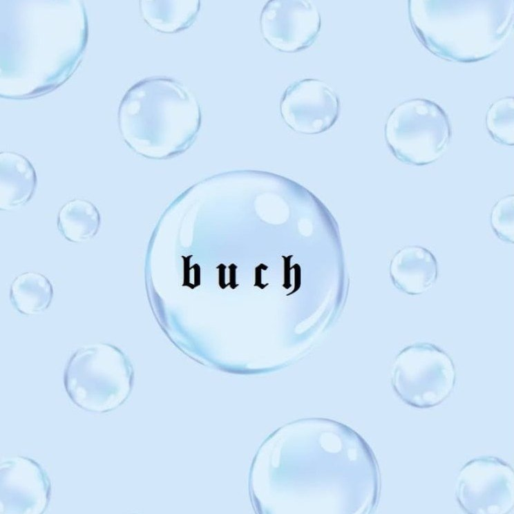
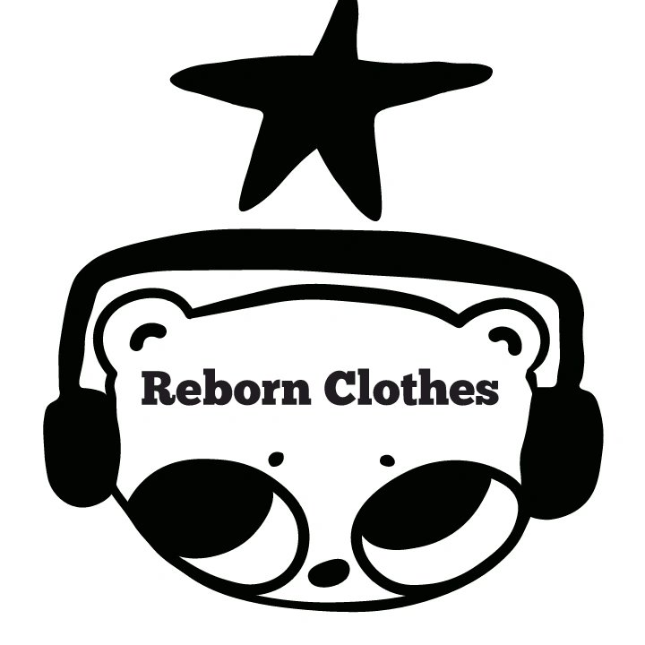

Tres marcas · Una sola historia
Ropa de segunda con alma.
Vintage · Y2K · Old Money

Ropa femenina · Segunda selección
Cada prenda tiene su historia. Ropa vintage femenina cuidadosamente seleccionada — vestidos de época, blusas con carácter, abrigos que cuentan décadas.

Y2K Revival · 2000s era
Y2K · Cyber
Rave · Baddie
Segunda mano
Old Money · Cuero · Segunda selección
Prendas que hablan de clase. Casacas de cuero, trench coats y piezas Old Money de segunda mano — para quien entiende que lo verdaderamente bueno no pasa de moda.